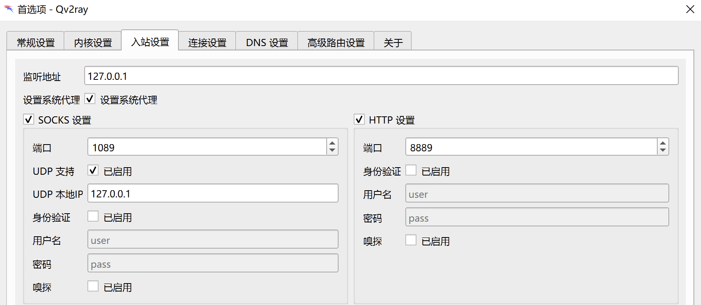
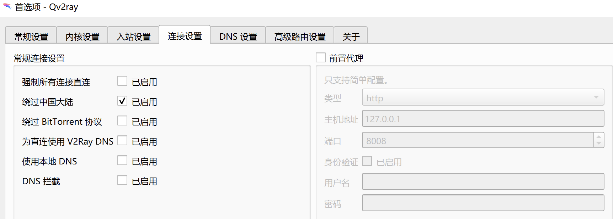

Ladder
文件
一些操作
- 解压文件，放在合适的位置
- 打开
qv2ray/qv2ray.exe - 在主界面点击
首选项，将内核设置中的V2Ray可执行文件路径和V2Ray资源目录分别设置为解压文件夹路径/qv2ray/documents/vcore/v2ray.exe和解压文件夹路径/qv2ray/documents/vcore/，点击检查V2Ray核心设置，并确认检查通过。入站和连接（多勾选一个绕过私有地址）设置成如图：  - 在主界面点击
插件/打开本地插件目录，把plugin目录下的两个.dll放到打开的插件目录 - 在主界面点击
分组，在下面可以添加订阅，用解压文件夹路径/addr.txt中的两个路径新建两个订阅（分组->订阅设置->粘贴地址->更新订阅），订阅类型是Basic Base64，确认可用个数$>0$，点击OK - 选择一个节点连接，用完在任务栏退出即可
（大概是这样……如果有锅的话我再康康……）